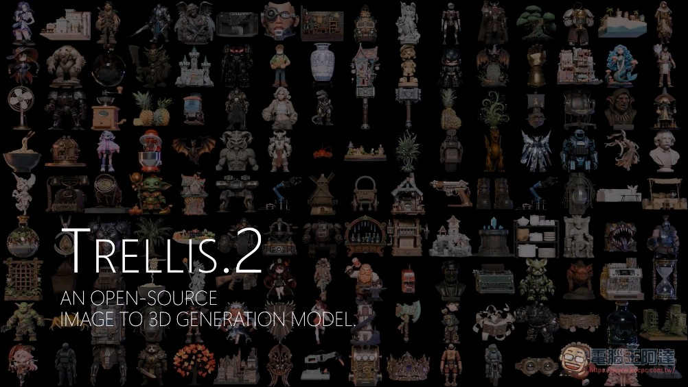

KOCPC｜微軟 TRELLIS.2 開源：一張圖生成 PBR 3D 資產，O‑Voxel 與 4B 模型重點查核

一句話摘要
TRELLIS.2 是 Microsoft Research 團隊釋出的 4B image-to-3D 模型，重點不是單純「照片變 3D」，而是用 O‑Voxel 表示法與 Sparse Compression VAE 讓生成結果能處理開放表面、非流形幾何、內部結構與 PBR 材質；適合放進 AI 學習雷達的「3D 資產生成／遊戲與視覺工作流」觀察清單。
KOCPC 文章重點
- 標題：微軟開源 TRELLIS.2：一張照片 3 秒生出高品質 3D 模型，完整 PBR 材質直接匯入 Unity、Blender。
- 發布：2026-08-01，分類為 AI 工具分享與教學。
- 主要主張：TRELLIS.2 可從圖像生成可用 3D 資產，輸出帶完整 PBR 材質的 GLB 檔，應用於 Unity、Unreal Engine、Blender、遊戲開發、電商展示、3D 列印與影視特效原型。
- 技術關鍵：O‑Voxel 取代傳統 iso-surface/field 表示法，強化開放表面、透明/半透明、內部空間與複雜拓撲的處理。
- 開源資訊：GitHub 倉庫、預訓練權重、Hugging Face demo 與訓練代碼。
官方來源查核
| 項目 | 查核結果 |
|---|---|
| GitHub | `microsoft/TRELLIS.2` README 稱其為 4B image-to-3D model，使用 O‑Voxel，可生成 complex topologies、sharp features、full PBR materials。 |
| 授權 | GitHub `LICENSE` 為 MIT License；Hugging Face 模型卡 frontmatter 也標示 `license: mit`。 |
| 模型卡 | Hugging Face `microsoft/TRELLIS.2-4B` 標示 pipeline 為 image-to-3d，並列出 paper、repository、project page。 |
| Project page | Microsoft GitHub Pages 專案頁確認：open-source 4B-parameter image-to-3D model、up to 1536³ PBR textured assets、16× spatial compression。 |
| arXiv | 論文〈Native and Compact Structured Latents for 3D Generation〉於 2025-12-16 提交，摘要確認 O‑Voxel、Sparse Compression VAE、4B flow-matching models。 |
| Microsoft Research article | `microsoft.com/en-us/research/articles/trellis-2` 是 KOCPC 引用來源之一；本次擷取時該頁回 403/high demand，未能直接讀取內文。 |
速度與硬體條件：不要把「3 秒」誤讀成普遍體驗
官方 README / Hugging Face 模型卡列出的 benchmark 是在 NVIDIA H100 GPU 上：
- 512³：約 3 秒（形狀約 2 秒 + 材質約 1 秒）。
- 1024³：約 17 秒。
- 1536³：約 60 秒。
同時官方需求也很明確：
- 系統：目前主要測試於 Linux。
- GPU：至少 24GB VRAM 的 NVIDIA GPU；官方驗證 A100 / H100。
- 軟體：需 CUDA Toolkit，建議版本 12.4。
所以文章標題「一張照片 3 秒」可視為 H100 + 512³ 下的官方速度亮點，不代表 MacBook、消費級顯卡或雲端免費 demo 都能達到同等延遲。
為什麼重要
- 對遊戲與 3D 工作流：若生成結果真的能保留 PBR 材質與較好拓撲，會比只產生可視化 mesh 的工具更接近生產管線。
- 對設計與電商：產品照轉可旋轉 3D 資產，有機會降低原型展示與素材準備成本。
- 對研究與開源：MIT 授權、訓練代碼與 4B 權重公開，代表團隊/工作室可評估 fine-tune 或導入自有素材庫。
- 對 AI 學習雷達：這是「2D 生成 → 影片生成 → 3D 資產生成」工具鏈成熟化的重要案例，值得追蹤 demo、模型品質與商用實作門檻。
風險與限制
- 品質仍依輸入圖、物件遮擋、材質反光/透明度與後處理而變；不應假設所有照片都能直接得到可商用資產。
- 3D 生成資產可能需要拓撲清理、UV/材質調整、碰撞盒與動畫 rigging，並非自動替代完整 3D 美術流程。
- 使用照片生成模型時要確認原圖版權、肖像權、商標與產品外觀權利。
- Hugging Face Space 可能排隊、休眠或資源限制；正式工作流仍需自備 GPU/雲端環境。
- Microsoft Research 文章本次無法直接讀取，本文官方查核主要依 GitHub、Hugging Face、project page 與 arXiv。
欒帥可追蹤的下一步
- 實測 Hugging Face Space：確認是否可產出 GLB、材質是否完整、下載流程是否穩定。
- 收集 3 組測試圖：透明物件、薄片/葉片、複雜材質商品照，比較 TRELLIS.2 與現有 image-to-3D 工具差異。
- 若要導入課程/工作坊，可把它設計成「照片 → GLB → Blender 檢查 → Unity 匯入」的 30 分鐘 demo。
來源
- KOCPC：https://www.kocpc.com.tw/archives/661342
- GitHub：https://github.com/microsoft/TRELLIS.2
- Hugging Face model：https://huggingface.co/microsoft/TRELLIS.2-4B
- Hugging Face Space：https://huggingface.co/spaces/microsoft/TRELLIS.2
- Project page：https://microsoft.github.io/TRELLIS.2/
- arXiv：https://arxiv.org/abs/2512.14692
- Microsoft Research article：https://www.microsoft.com/en-us/research/articles/trellis-2